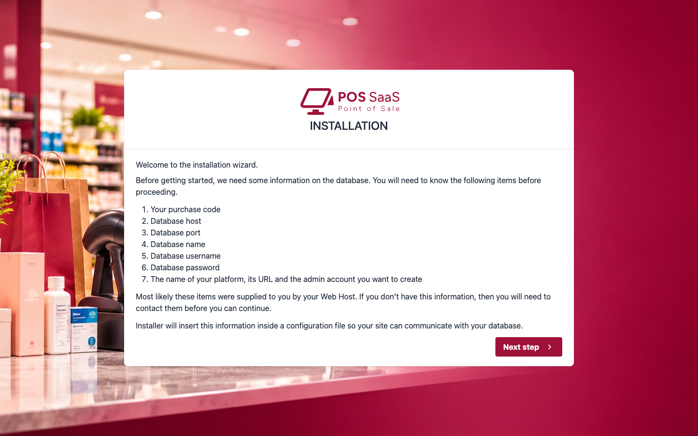
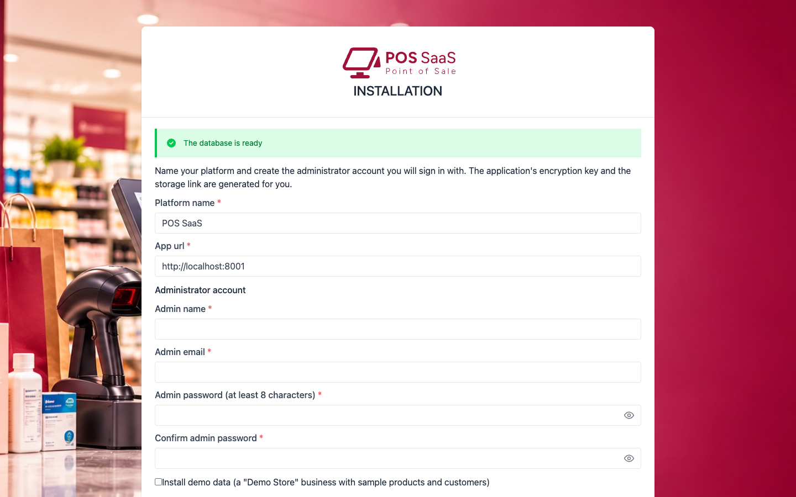

Web installer
The installer sets up the database and creates your Super admin account. It opens automatically when you visit an uninstalled site.
Where to find it: Open your domain, or go to /install.


The screens
- Welcome. Lists what you need: app URL and database host, port, name, username and password. Click Next step.
- Server requirements. Shows each PHP version and extension as passed or failed. Fix failures and click Reload. See Server requirements.
- Folder permissions. Checks
/storage/framework,/storage/logsand/bootstrap/cache. - Purchase code. Enter your purchase code. It is verified against the WRTeam validator for your domain. There is no way to skip it.
- PHP functions. Confirms
symlinkandproc_openare enabled andopen_basediris off. - Database. Enter Database host, Database port, Database name, Database user, Database password and Database prefix. The database must be empty.
- Migrations. Creates all tables and loads the base data. This can take a while, so do not close the page.
- Site and admin. See below.
- Finish. Shows your website address and admin login link.


Site and admin
| Field | What it does |
|---|---|
| Platform name | The name of your platform, saved as the application name. |
| App url | Your site's address. |
| Admin name | Name of your Super admin account. |
| Admin email | The email you sign in with. |
| Admin password | At least 8 characters. |
| Confirm admin password | Repeat the password. |
| Install demo data | Optional. Adds a "Demo Store" business with sample products and customers, an owner owner@example.com and a cashier cashier@example.com (password Demo@2026 for both). Not for a live site. |
This step also generates the encryption key, writes the settings to .env (production mode, debug off) and creates the storage link.
After installing
On finish the installer locks itself and /install becomes a 404. Your first sign-in at /admin/login asks you to set up two-factor authentication. See First login.
Troubleshooting
- Validation server could not be reached. Your host blocks outbound HTTPS on port 443 or DNS fails. Ask the host to allow it.
- Purchase code not valid for this site. If it is registered to another domain, reset it from your purchase account first.
- Database step fails. Check host, port, name, user and password, and that
pdo_mysqlis installed. The database must have no tables. - Redirected to
/installon an installed site. The database has no tables, or.envpoints to the wrong database. See FAQs.